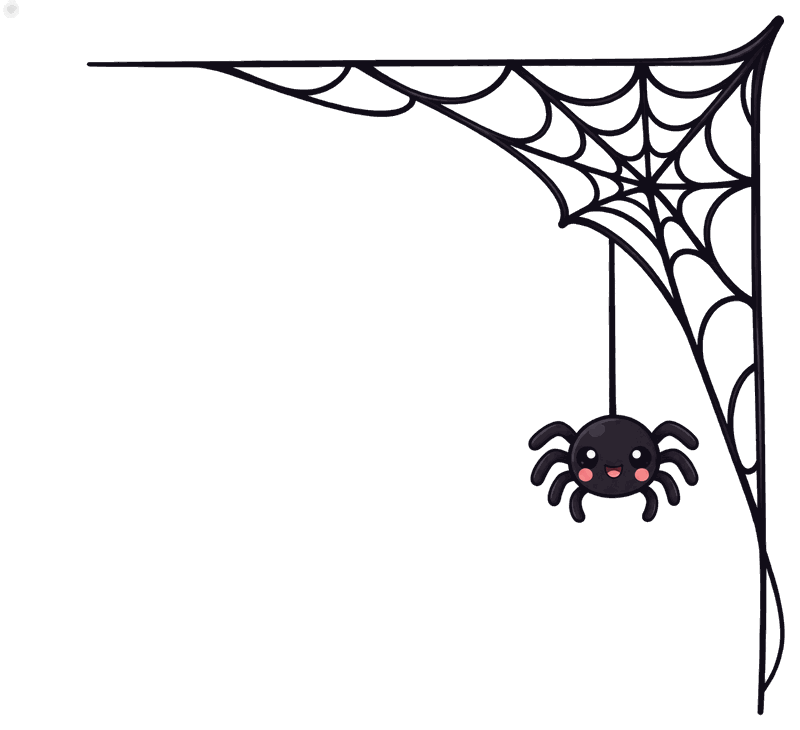
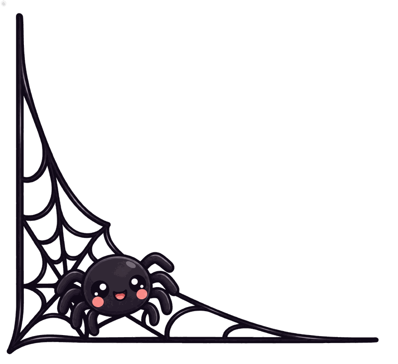
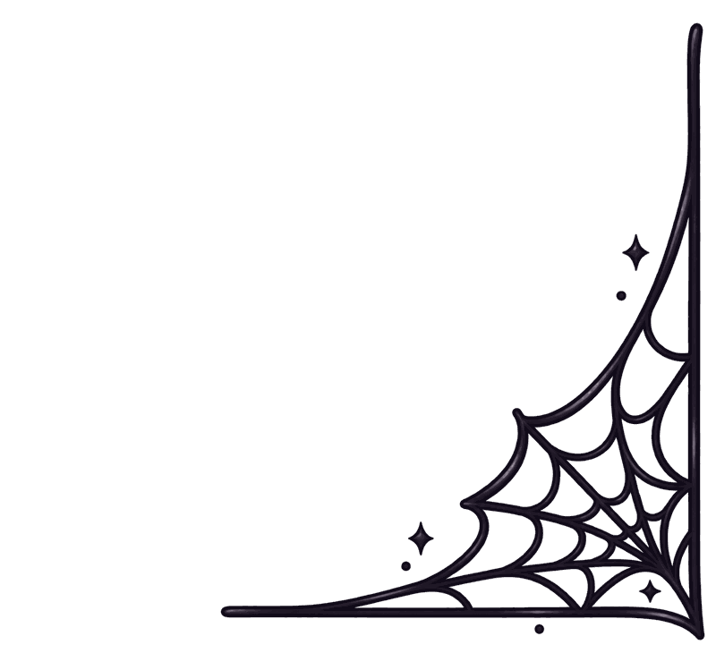
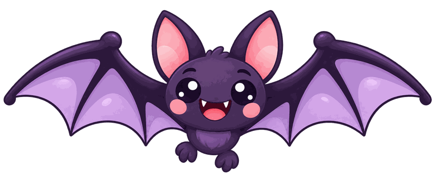
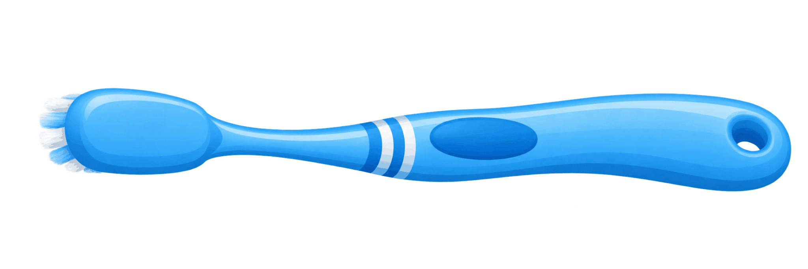
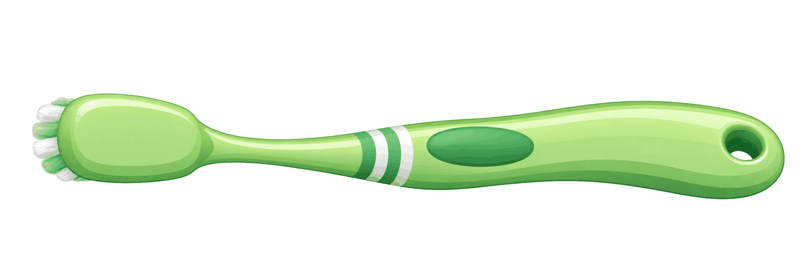
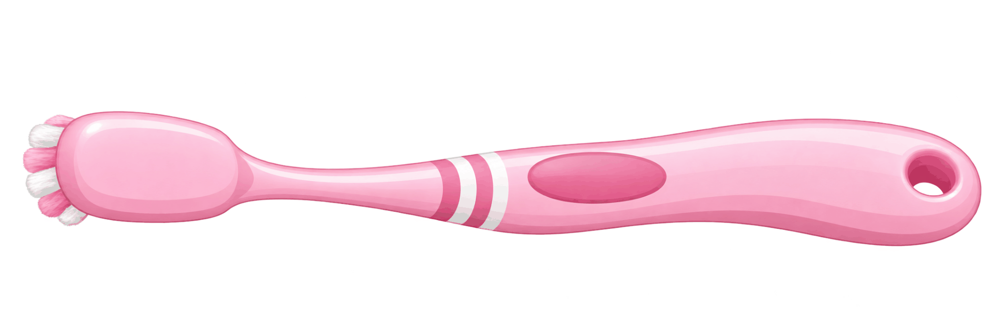
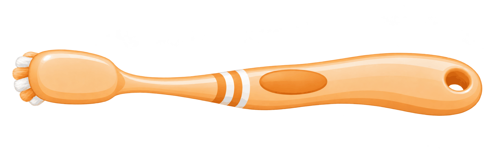
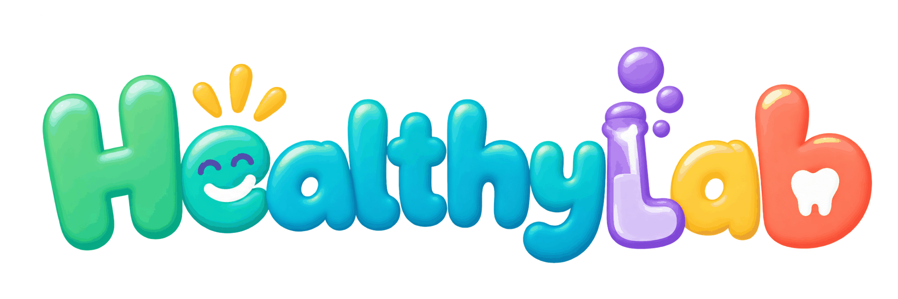
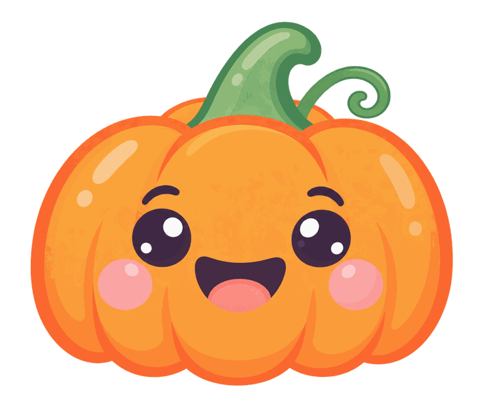

¡Una sonrisa de miedo!

Preparando la cámara...
DESARROLLO DE APLICACIONES INTERACTIVAS
PR2 — Desktop App: Interacción cámara
HEALTHYSMILE LAB
¡Una sonrisa de miedo!
Creación, diseño y desarrollo
Amaya Muñoz Azanza
RECURSOS VISUALES Y SONOROS
Las imágenes se han generado con ChatGPT y los efectos de sonido y las melodías con ElevenLabs, siguiendo las indicaciones creativas de la autora.
Bibliografía
Consejo General de Dentistas de España. (2024). Documento de consenso sobre el cepillado. https://consejodentistas.es/informacion-publica/salud-bucodental/campanas/taller-de-higiene-bucodental/documento-de-consenso-sobre-el-cepillado/
Electron. (s. f.-a). BrowserWindow. https://www.electronjs.org/es/docs/latest/api/browser-window
Electron. (s. f.-b). Construye tu primera aplicación. https://www.electronjs.org/es/docs/latest/tutorial/tutorial-first-app
Google. (2026, 9 de octubre). Face landmark detection guide for Web. Google AI Edge. https://developers.google.com/edge/mediapipe/solutions/vision/face_landmarker/web_js
Mandic, V. (s. f.). Human [Código fuente]. GitHub. https://github.com/vladmandic/human
Márquez Salguero, R., y Casado Martínez, C. (s. f.). Cuaderno de programación con p5.js. Universitat Oberta de Catalunya. https://disseny.recursos.uoc.edu/materials/programacio/es/
MDN Web Docs. (2026, 2 de junio). Guía de JavaScript. Mozilla. https://developer.mozilla.org/es/docs/Web/JavaScript/Guide
ml5.js. (s. f.). Reference. https://docs.ml5js.org/
Mühler, V. (s. f.). face-api.js: JavaScript API for face detection and face recognition in the browser and Node.js with TensorFlow.js [Código fuente]. GitHub. https://github.com/justadudewhohacks/face-api.js
p5.js. (s. f.). Reference. https://p5js.org/reference/
Tauri Contributors. (2025, 19 de febrero). ¿Qué es Tauri? https://v2.tauri.app/es/start/
TensorFlow. (s. f.). Face Landmarks Detection [Código fuente]. GitHub. https://github.com/tensorflow/tfjs-models/blob/master/face-landmarks-detection/README.md
© 2026 — Amaya Muñoz Azanza
Preparando reconocimiento facial...